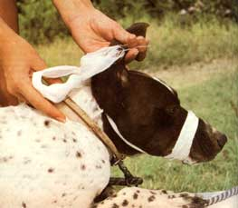

Dog And Cat Medication
September/October 1979
Issue # 59 - September/October 1979
People have been keeping dog and cat companions ever since humankind began to domesticate animals, and most folks feel that sharing life with at least one of the furry housemates is an educational and pleasurable experience. Unfortunately, though, such four-legged family members do get sick now and then. In fact, it sometimes seems that a household's animals require more care and attention than do its humans!
You can, however, save a considerable amount of time, effort, worry, and money . . . by treating many pet illnesses yourself. And-in this article-I'll describe some basic veterinary techniques that'll help you administer oral and injected medication to both dogs and cats. But first let me give you a few important words of warning:
[1] Consult with your vet to find out what medicine you should be giving your pets ( this piece will tell you "how to" but not "what to" ).
[2] Be careful about what you're doing. Know the proper techniques for cleaning and filling a syringe (as described in my article, "You Can Too Give That Animal an Injection" in MOTHER NO. 53, page 92). Read medicine labels several times to be sure you're using the proper amounts. And be painstaking in your efforts to apply those physics properly.
[3] Don't become frustrated if Kitty keeps spitting out the pill or Rover squirms free just when you finally get the needle ready. Patience is an often necessary virtue for any animal healer to develop.
ORAL DOG MEDICATIONS
The easiest way to give oral medications to your canine, of course, is to take advantage of the beast's gluttonous nature. Simply hide the powdered or capsuled remedy in your pup's favorite treat and let the "patient" gulp it down.
However, some particular medications-as the labels (which you should ALWAYS read . . . more than once) will tell you-shouldn't be given along with food. Furthermore, a few canines are such picky eaters that they'll find the tiny pill in the middle of that tasty hunk of hamburger and "spittoon" it right out onto the floor.
You can force-feed pills to a reluctant dog by grasping both sides of the animal's upper muzzle with one hand, and pressing the beast's lips against its upper teeth. This "squeeze play" will force the pet to open its mouth enough for you to pop a pill over its tongue. Larger capsules (called "boluses") can be lubricated-for easier internal travel-with a little butter or mineral oil. But no matter what size the pill is, place it well back in the dog's mouth (think in terms of tickling the beast's tonsils). Then close your critter's jaws and hold 'em shut (and slightly elevated) until the animal finally swallows. You may also need to stroke Fido's neck-or even gently blow in his nose-to encourage the gulping reflex.
Liquid medications are usually easier o to administer. Simply pull the dog's lower lip out on one side (near the back of the jaw . . . where it meets the upper lip) m to form a cup, pour the elixir into this "pinched pouch", and then tip the s hound's head slightly upward.
CANINE INJECTIONS
Sometimes even our best efforts to help will give a pet some temporary pain . . . and dogs often react instinctively to such discomfort by attacking the cause of the hurt with their teeth. Well-when you're giving your pet an injection-that "cause" will be your fragile hand! So, for your own health, you may want to protect yourself in advance from any "snappy" reflexes.
One way to avoid getting chomped during your pet's treatment is to have a helper run one arm under the dog's neck and trap the animal's head in the crook of that limb. The assistant can then wrap his or her other arm around the dog's body to keep the animal from backing out of the restraining grip.
The best way to protect yourself from an irritated pooch, though, is to put a muzzle on the critter. You can make such a jaw vise out of leather thongs, 1-to 2-inch gauze, or any other cordlike material. Simply loop the "ribbon" under the dog's lower jaw and over its snout, tie an overhand knot, run the wrap back under the animal's mouth, and make another overhand hitch. Then bind the ends of the homemade muzzle by tying a bow behind the dog's ears.
Once both your pet and your equipment are ready, it's time to administer the medication. The two most common injections are subcutaneous (under the skin) and intramuscular (into a muscle) shots. Neither one of these "needles" is particularly difficult to administer . . . just be sure that you're giving the right type of shot for the medicine you're using! (By the way, tricky intravenous and intraperitoneal injections are almost always best left to the vet.)
Subcutaneous (Sub-Q) injections are given along the middle of the dog's back . . . in the loose fold of skin over its shoulders. Just clean this section of hide . . . pinch and lift the "flap" . . . push your 20- to 22-gauge, 1-1/2-inch needle into the pocket formed by the skin . . . point it toward the dog . . . and inject.
Intramuscular (IM.) shots are a bit more difficult to administer. The best spot for an LM. injection is in the rear third of the dog's thigh . . . a safe distance away from the large sciatic nerve that runs down the middle of the leg. Cleanse this area and thrust in the needle (use a 20- to 22-gauge, 1- to 1-1/2-inch point on Lassie-sized canines and a 23- to 25-gauge, 3/4- to 1-inch "poker" on smaller dogs). Next draw back briefly ("aspirate") on the syringe to see if blood comes into your injector. If so, you've hit a vein or artery and should start over and "look" elsewhere for your medication site.
ORAL MEDICATIONS FOR CATS
Felines present their own special brand of problems to the homestead animal healer. An angry tabby can swat with its sharp front claws, bite with its razor-edged teeth, and throw its powerful hind legs into the fray. Besides all of that, cats will often react more violently to your efforts at restraint than they will to whatever pain your treatment may inflict.
Because of a feline's defenses (and defensiveness), the best cat restraint technique is often no restraint at all. You can (at times) give medicines, and even some injections, to a tabby-with no problems at all-if the critter is being held in the arms of its favorite human.
Another good cat-handling tactic is to hold your pet off the ground by lifting on the large fold of skin directly behind the animal's head. This tranquilizing grip will subdue most any feline ( probably because the cat's mother used to haul the animal by the same spot back during its "kitty" days).
Since most cats are too fussy to fall for the pill-in-the-food trick, this scruffgrabbing maneuver is a good way to give Tabby her capsuled medications. First, grab enough skin so that-when you tilt the critter's head backward-its mouth will be forced open. Next, plop a lubricated capsule onto the back of the cat's tongue (this will be easier to accomplish if you use long-handled tweezers or push the medicine back toward the throat with the eraser end of a pencil). And then close the critter's mouth and keep its head tilted upward until the animal swallows. (Give the feline its liquid doses of medicine with the same pour-the-juice-in-the-cheek technique you use with dogs.)
If your cat absolutely refuses to take its oral medicine without a fight, you'll have to use more serious restraint measures. It's hard to muzzle such a short-snouted beast . . . so try, instead, having one person hold the animal by the scruff of the neck while another holds its feet. If the unruly feline is still unmanageable, you can wrap the cat's whole body in a heavy cloth towel or canvas bag . . . leaving only its head exposed.
FELINE NEEDLES
The locations and techniques for subcutaneous and intramuscular feline injections are about the same as those for dogs: Sub-Q shots are given in the fold of skin over the animal's shoulders, and I.M. injections are delivered to the rear third of the thigh muscle (use a 23- to 25-gauge, 3/4- to 1-inch needle). "Under the skin" shots are relatively painless, so they can often be given-quickly-while the cat is relaxed or is diverted by its favorite food.
TAKE CARE
There's no closer human-animal relationship than that between folks and their family dogs and cats. And you can-with the skills presented in this article and some patience-give at least as much healing help to these animals as you give to the two-legged members of your household.
EDITOR'S. NOTE: Further information on medicating your own animals can be found in the following articles:
1. "How to Give That First Injection", MOTHER NO. 43, page 90a.
2. "You Can Too Give That Animal an Injection", MOTHER NO. 53, page 92.
3. "Be Your Own `Animal Medicine Man'", MOTHER NO. 54, page 74.
4. "How to Deal With Internal Parasites: Part 2", MOTHER NO. 57, page 56.
Back issues are available for $3.00 each-plus $1.00 shipping and handling per order-from THE MOTHER EARTH NEWS(restricted), P.O. Box 70, Hendersonville, North Carolina 28739.
 TOP ROW, LEFT TO RIGHT: An angry tabby can leave permanent reminders of its distress, so use the tranquilizing ""maternal"" back-of-the-neck grasp when administering a shot... Liquid medicine will slip 'twixt Rovers tongue and his lip (then just tilt his head back and the elixir will be gone in a gulp)... Lubricate a ""bolus"" of this size with butter or mineral oil before you tickle pooch's tonsils with it, and then stoke the neck?or blow in the nose?to induce swallowing. ABOVE: Subcutaneous injections are given in the middle of the dog's back, in the loose fold of skin just over the shoulders. Have a helper restrain Fido so you don't get bitten... Give intramuscular injections in the rear third of the dog's thigh, a safe distance from the sciatic nerve that runs down the middle of the leg... |
 A gauze bandage is the best way to protect yourself from the little nipper. If you're dealing with a ""short-snouted"" mutt, though, have someone hold the dog's head in the crook of his or her arm, and cradle the canine's body with the other arm. |
|